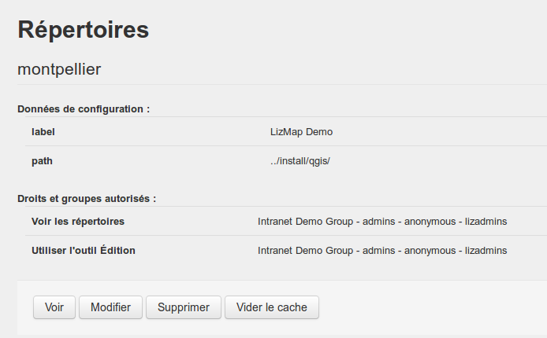

Configuration de Lizmap¶
Introduction¶
Le menu Configuration Lizmap est divisée en 2 parties
- Les Services : la configuration générale de Lizmap Web Client - serveur, cache, etc.
- Les Répertoires : créer et configurer les répertoires Lizmap

Les services¶
Pour configurer les services, cliquer sur le bouton Modifier situé sous le récapitulatif
- URL du serveur WMS : QGIS Server doit être installé sur le même ordinateur que Lizmap Web Client
- Type de stockage pour le cache
- file: Les tuiles mises en cache sont stockées dans un répertoire du serveur par couche
- sqlite: Les tuiles sont enregistrées dans une base de données sqlite par couche
- Répertoire racine du cache : le dossier dans lequel est stocké le cache. Il doit être accessible en écriture par le serveur Apache
- Durée de vie du cache : le temps en seconde pendant lequel chaque tuile est conservée. C’est une valeur par défaut pour les couches dont le temps n’a pas été configuré via le plugin
- Les tuiles du cache plus vieilles que ce temps sont automatiquement raffraîchies.
- La valeur 0 signigie que les tuiles n’expirent jamais
- Le temps d’expiration doit être adapté à l’évolution des données
- Envoi des requêtes à QGIS Server avec : 2 méthodes. Php ou Curl . Utiliser la première si curl n’est pas installé sur le serveur
- Mode de débogage : enregistre certaines requêtes dans un fichier de log : lizmap/var/log/messages.log

Les répertoires¶
Pour chaque répertoire Lizmap sont listés
- Les informations principales : nom (label) et chemin (path)
- La liste des droits avec les groupes concernés
- Des boutons d’action :
- voir : affiche la page qui liste les cartes de ce répertoire
- Modifier: affiche le formulaire de modification du répertoire
- Supprimer : permet de supprimer le répertoire
- Vider le cache : permet de supprimer tout le cache de toutes les couches des projets de ce répertoire
On peut créer un nouveau répertoire avec le bouton Ajouter un répertoire situé tout en bas de la page
Ajouter un répertoire¶
Pour créer un répertoire, il faut donner
- un identifiant: un mot sans espaces, accents ni caractères spéciaux
- un label : le nom qui sera affiché pour ce répertoire, accents et espaces autorisés
- un chemin (path) : le chemin complet vers le dossier qui contient les projets QGIS et les données
Définir les droits pour chaque groupe¶
- Voir les répertoires :
- tous les utilisateurs des groupes cochés pourront accéder aux cartes de ce répertoire
- le groupe anonymous représente les utilisateurs non enregistrés et permet de rendre les cartes publiques
Modifier un répertoire¶